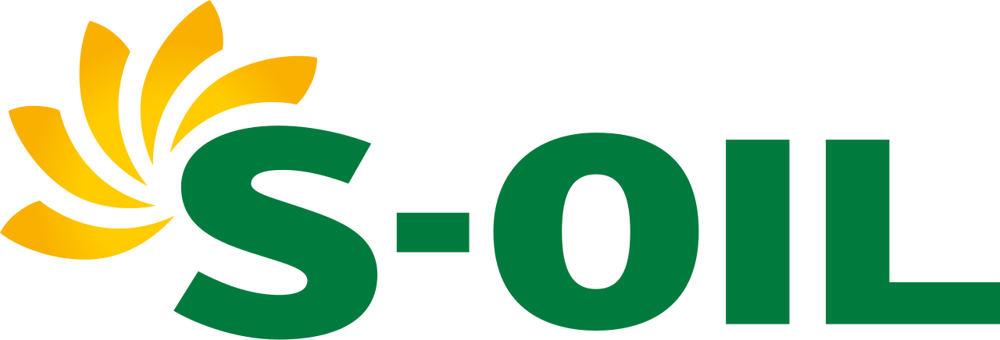

홈 > 브랜드 매거진 > 에쓰오일
에쓰오일
에쓰오일(S-Oil)은 사우디 아람코가 최대주주인 한국의 정유 기업으로, 1976년 설립돼 2000년 현 사명이 됐다.
산업 분야 브랜드·비즈니스 · 공개 등급 자료 기반 · 브랜드 평가 4.3 ★

한눈에 보는 브랜드
에쓰오일은 1976년 한국과 이란 자본의 합작사 한이석유로 출범해 1980년 쌍용정유로 재편됐고, 2000년 지금의 사명으로 바뀐 국내 정유사다. 첫 전환점은 1991년 사우디 아람코의 합작 참여였고, 두 번째 전환점은 아람코가 지분 63.41%를 쥔 단일 대주주 체제로 굳어진 지배구조 개편이다.
2024년 매출 36조6370억원 규모로, 원유 조달부터 정유·석유화학·윤활기유를 아우르는 수직 통합 사업을 운영한다.
브랜드 관점
에쓰오일의 가장 큰 차별점은 세계 최대 산유국 사우디 아람코를 대주주로 둔 안정적 원유 조달 구조다. 원유 전량을 수입하는 한국 정유산업에서 이 연결은 결정적 무기이며, 실제로 경질유 내수 점유율 23%대로 SK에너지에 이어 2위까지 올라서며 전통 강자 GS칼텍스를 제친 판도 변화를 만들었다.
다만 2024년 영업이익은 정제마진 약세로 전년 대비 66% 줄어든 4606억원에 그쳐, 정유 단일 의존의 한계를 드러냈다. 그 답이 총 9조원대를 투입한 샤힌 프로젝트다.
울산 온산에 연 320만톤 규모 석유화학 설비를 세워 에틸렌·프로필렌 중심으로 수익원을 옮기는 정유에서 석화로의 무게중심 이동 전략으로, 에너지 전환기에도 이익을 지키려는 장기 포석이다.
시작과 성장
1970년대 두 차례 오일쇼크로 안정적 원유 확보가 국가 과제였던 시기, 1976년 한국과 이란 국영 석유자본이 손잡은 한이석유가 출발점이다. 그러나 이란 혁명으로 이란 자본이 빠지면서 1980년 쌍용정유로 상호를 바꿔 쌍용그룹 품에 안겼고, 이것이 첫 전환점이다.
두 번째 전환점은 1991년 사우디 아람코의 합작 참여로, 산유국 메이저와의 결합이라는 정체성이 이때 형성됐다. 1999년 쌍용그룹 구조조정 과정에서 계열 분리됐고 2000년 현재의 사명으로 새 출발했다.
이후 온산 공장의 고도화 설비 증설과 윤활기유·석유화학 확장을 거듭하며 종합 에너지화학 기업으로 외연을 넓혀, 2020년대 샤힌 프로젝트로 사업 구조의 대전환을 시도하고 있다.
브랜드 아이덴티티
에쓰오일의 비주얼 아이덴티티 핵심은 알파벳 S를 중심으로 다섯 갈래로 뻗는 햇살 마크다. 이 다섯 햇살은 회사의 공유가치 5 S-SPIRIT을 상징하는 동시에 아침 태양처럼 활기차고 따뜻한 마음을 형상화한다.
소비자 지향과 친환경을 담은 그린에 시그니처 옐로를 더해 명료하고 밝은 인상을 만든다. 친근감을 위해 '좋은 기름'에서 이름을 딴 캐릭터 구도일을 내세우고, 자신감과 도전의 슬로건으로 품질·경쟁력·미래비전을 해마다 풀어내는 보이스를 유지한다.
일상의 운전자와 산업 고객 모두를 타깃으로 한다.
제품과 서비스
사업은 세 축으로 짜여 있다. 첫째 정유 부문은 수입 원유를 정제해 휘발유·경유 등 석유제품을 생산한다.
둘째 석유화학 부문은 파라자일렌·벤젠 등을 만들며, 샤힌 프로젝트로 에틸렌·프로필렌 영역까지 크게 넓힌다. 셋째 윤활기유 부문은 차량·선박·산업용 프리미엄 윤활기유를 만들어 수익성을 보탠다.
소비자와 만나는 채널은 전국 주유소 네트워크이며, 캐릭터 마케팅으로 친근한 브랜드 이미지를 굳혔다.
현재 상태
본사는 서울 마포구 백범로에 있고 주력 공장은 울산 온산에 있다. 대주주는 사우디 아람코로 지분 63.41%를 보유한 단일 최대주주이며, 대표는 안와르 알 히즈아지다.
임직원은 3,547명 수준이다. 2024년 매출은 36조6370억원, 영업이익은 4606억원을 기록했다.
2025년 이후 확정 수치는 미공개다.
타임라인
정리된 연도형 이벤트가 없습니다.
BI/CI 변천사
함께 읽을 브랜드
 브랜드·비즈니스 · 자료 기반GS칼텍스
브랜드·비즈니스 · 자료 기반GS칼텍스GS칼텍스(GS Caltex)는 한국 최초의 민간 정유사로, 1967년 호남정유로 설립돼 2005년 현 사명이 됐다.
 브랜드·비즈니스 · 자료 기반롯데케미칼
브랜드·비즈니스 · 자료 기반롯데케미칼롯데케미칼(Lotte Chemical)은 롯데그룹 계열의 한국 대표 석유화학 기업으로, 1976년 호남석유화학으로 출발했다.
 브랜드·비즈니스 · 편집 검수Bose
브랜드·비즈니스 · 편집 검수BoseBose는 2024년에 기록된 Designed by Collins 계열의 브랜드 아이덴티티 사례입니다. Collins가 아이덴티티 작업의 디자이너로 기록되어 있습니다...
Du
Dumbo
브랜드·비즈니스 · 편집 검수DumboDumbo는 2025년에 기록된 Designed by DNCO 계열의 브랜드 아이덴티티 사례입니다. DNCO가 아이덴티티 작업의 디자이너로 기록되어 있습니다. 공개...
Ha
Hart Bageri
브랜드·비즈니스 · 편집 검수Hart BageriHart Bageri는 2025년에 기록된 Designed by Gretel 계열의 브랜드 아이덴티티 사례입니다. Gretel가 아이덴티티 작업의 디자이너로 기록되어...
 브랜드·비즈니스 · 편집 검수Huntington Bank
브랜드·비즈니스 · 편집 검수Huntington BankHuntington Bank는 2025년에 기록된 Banking 계열의 브랜드 아이덴티티 사례입니다. Koto가 아이덴티티 작업의 디자이너로 기록되어 있습니다. 공개...
IA
IAAC
브랜드·비즈니스 · 편집 검수IAACIAAC는 2025년에 기록된 Designed by Mucho 계열의 브랜드 아이덴티티 사례입니다. Mucho가 아이덴티티 작업의 디자이너로 기록되어 있습니다. 공개...
Ka
Kawatetsu / Kawasaki Steel Corporation
브랜드·비즈니스 · 편집 검수Kawatetsu / Kawasaki Steel CorporationKawatetsu / Kawasaki Steel Corporation는 1989년에 기록된 Designed by PAOS 계열의 브랜드 아이덴티티 사례입니다. PAO...